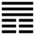

Thiên Địa Bĩ (否 pǐ)
Trong vũ trụ không có gì là thông hoài được, hết thông thì tới bế tắc, cùng, cho nên sau quẻ Thái tới quẻ Bĩ.
Thoán tử.
否之匪人, 不利君子貞, 大往小來．
Bĩ chi phỉ nhân, bất lợi quân tử trinh, đại vãng tiểu lai.
Dịch: Bĩ không phải đạo người (phi nhân nghĩa như phi nhân đạo), vì nó không lợi cho đạo chính của quân tử (Tượng của nó là) cái lớn (dương ) đi mà cái nhỏ (âm) lại.
Giảng: Bĩ trái với Thái. Thái thì dương ở dưới thăng lên, giao với âm ở trên giáng xuống; bĩ thì dương ở trên đi lên, âm ở dưới đi xuống không giao nhau. Âm dương không giao nhau thì bế tắc, ở đạo người như vậy mà ở vạn vật cũng như vậy. Thời đó không lợi với đạo chính của quân tử, vì dương đi nghĩa là đạo của người quân tử tiêu lần, mà âm lại nghĩa là đạo của tiểu nhân lớn lên.
Đại tượng truyện – Khuyên: gặp thời bĩ thì người quân tử nên thu cái đức của mình lại (đừng hành động gì cả, riêng giữ các đức của mình) để tránh tai nạn, đừng màng chút lợi danh nào cả. (Quân tử dĩ kiệm đức tị nạn, bất khả vinh dĩ lộc). Nghĩa là nên ở ẩn.
Gặp thời Truân, thời khó khăn, gian truân, người quân tử nên tập hợp nhau lại mà hành động; còn thời đã bĩ, đã bế tắc cùng cực rồi thì hành động chỉ vô ích, cốt giữ cái đức và cái thân mình thôi.
Ý nghĩa các hào :
1.
初六: 拔茅茹, 以其彙, 貞吉亨．
Sơ lục: Bạt mao nhự, dĩ kỳ vị, trinh cát hanh.
Dịch: Hào 1 âm: Nhổ rễ cỏ mao mà được cả đám, hễ chính thì tốt mà hanh thông.
Giảng: Hào này rất giống hào 1 quẻ Thái: cũng “bạt mao dĩ kỳ vị” vì quẻ Thái hào 1 cặp với hai hào trên, quẻ này cũng vậy, cũng có đồng chí, làm việc dễ có kết quả; chỉ khác quẻ thái hào 1 là dương, quân tử, quẻ này hào 1 là âm, tiểu nhân; cho nên quẻ Thái khuyên cứ tiến lên (chính) sẽ tốt; còn quẻ này thì khuyên phải “trinh” chính đáng (trinh – khác nhau ở hai chữ chính [正] và trinh [貞] thì sẽ tốt và hanh thông.
Hào 1 quẻ Bĩ là tiểu nhân nhưng mới bước đầu, cái ác chưa hiện rõ, lại ứng hợp với hào 4 ở trên là quân tử, cho nên còn có hy vọng cải hóa được. Ðại tượng truyện bảo: nếu để tâm giúp nước (chí tại quân – quân là vua, là quốc gia) như hào 4 thì sẽ tốt. Như vậy là có ý khuyên tiểu nhân nên đứng vào phe quân tử.
2.
六二: 包承, 小人吉;大人否, 亨．
Lục nhị: Bào thừa, tiểu nhân cát; đại nhân bĩ, hanh.
Dịch: Hào 2, âm: Tiểu nhân chịu đựng và vâng thuận người quân tử thì tốt: đại nhân (có đức lớn) nên giữ tư cách trong cảnh bế tắc (khốn cùng) thì hanh thông.
Giảng: Hào này tuy là tiểu nhân, nhưng đắc trung đắc chính, chung quanh là tiểu nhân cả, mà ứng hợp với hào 5 quân tử ở trên, cho nên hào từ khuyên nó nên vâng thuận quân tử thì tốt. Còn kẻ đại nhân được bọn tiểu nhân vâng thuận – vì chúng muốn mua danh – thì cũng đừng theo chúng, cứ giữ khí tiết của mình trong thời khốn cùng, như vậy sẽ hanh thông.
3.
六三: 包羞．
Lục tam: Bao tu.
Dịch: Hào 3, âm: Chứa chất sự gian tà, xấu hổ.
Giảng: Hào này, không trung, không chính, là kẻ đứng đầu bọn tiểu nhân (vì ở trên cùng nội quái khôn), cho nên rất xấu, đáng ghét.
4.
九四:有命, 无咎．疇離祉．
Cửu tứ: Hữu mệnh, vô cữu. Trù li chỉ.
Dịch: Hào 4 dương : có mệnh trời (tức như thời vận đã tới) thì không lỗi mà bạn của mình cũng nhờ cậy mình mà được hưởng phúc.
Giảng: Hào này ở quá nửa quẻ Bĩ, có mòi sắp hết bĩ rồi, cho nên nói là thời vận đã tới; nó là dương ở trong ngọai quái Càn, chính là người quân tử thực hiện được chí của mình. Bạn của nó, tức hai hào 5, 6 cùng là dương cả - cũng sẽ được hưởng phúc.
5.
九五: 休否, 大 人吉．其亡, 其亡, 繫于苞桑．
Cửu ngũ: Hưu bĩ, đại nhân cát.
Kỳ vong, kỳ vong, hệ vu bao tang.
Dịch: Hào 5, dương : làm cho hết bĩ, đó là đạo tốt của bậc đại nhân (tuy nhiên, phải biết lo). Có thể mất đấy, (đừng quên điều đó thì mới vững như buộc vào một cụm dâu (dây dâu nhiều rễ, ăn sâu dưới đất, rất khó nhổ).
Giảng: Hào này có đức dương cương trung chính, lại ở vào ngôi chí tôn, trong thời Bĩ sắp hết, cho nên lời đoán là tôt. Những vẫn phải thận trọng, đừng sai sót.
Theo Hệ từ hạ chương V thì Khổng tử đọc tới hào này, bàn thêm rằng: “Người quân tử khi yên ổn thì không nên quên rằng sẽ có thể nguy; khi vững thì không quên rằng có thể mất, khi trị thì không quên rằng sẽ có thể loạn. Nhờ vậy mà thân an nước nhà giữ vững được.”
6.
上九: 傾否, 先否, 後喜．
Thượng cửu: Khuynh bĩ, tiên bĩ, hậu hĩ.
Dịch: Hào trên cùng, dương: đánh đổ được cái bĩ, trước còn bĩ, sau thì mừng.
Giảng: Đây là thời cuối cùng của Bĩ mà bĩ cực thì thái lai; người quân tử có tài sẽ dắt cả bạn bè (trỏ hào 4 và 5) mà đánh đổ dược bĩ. Nhưng mới đầu còn phải lo lắng (tiên bĩ) sau mới mừng là bước lên được cảnh Thái rồi.
Chúng ta để ý: Quẻ Thái, mới đến hào 3, còn thịnh cực mà Dịch đã khuyên phải giữ được chính đáng trong cảnh gian nan (gian trinh); còn quẻ Bĩ, khi mới tới hào 4, mới có mòi sắp hết bĩ mà Dịch đã khuyên là thời đã tới, người quân tử nên thực hiện chí của mình đi. Nghĩa là luôn luôn phải sẵn sàng để nắm ngay lấy cơ hội.